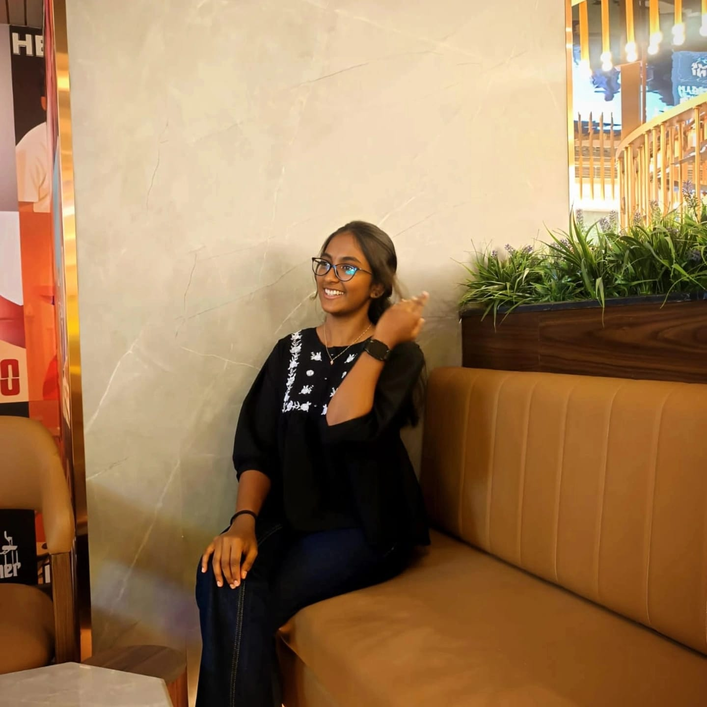
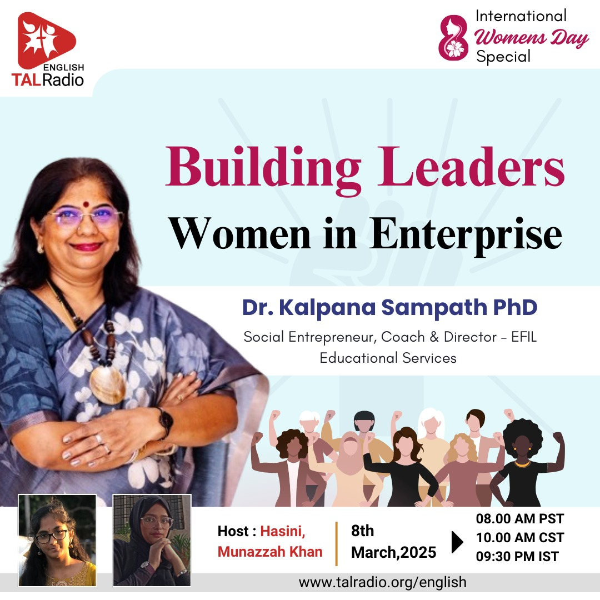
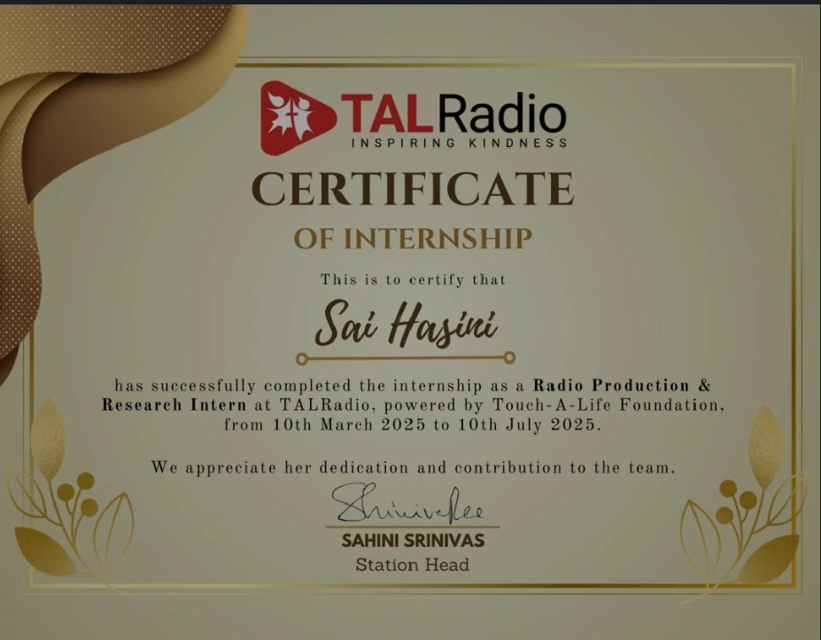
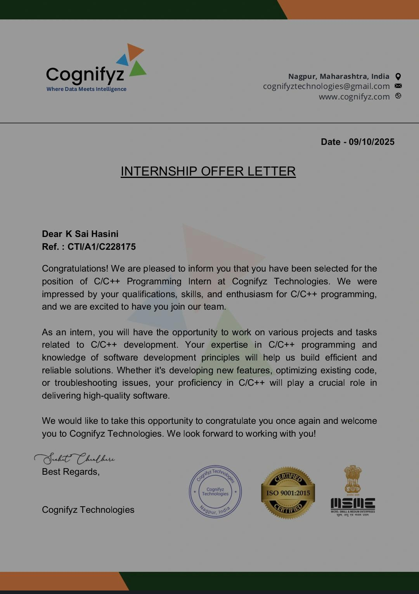
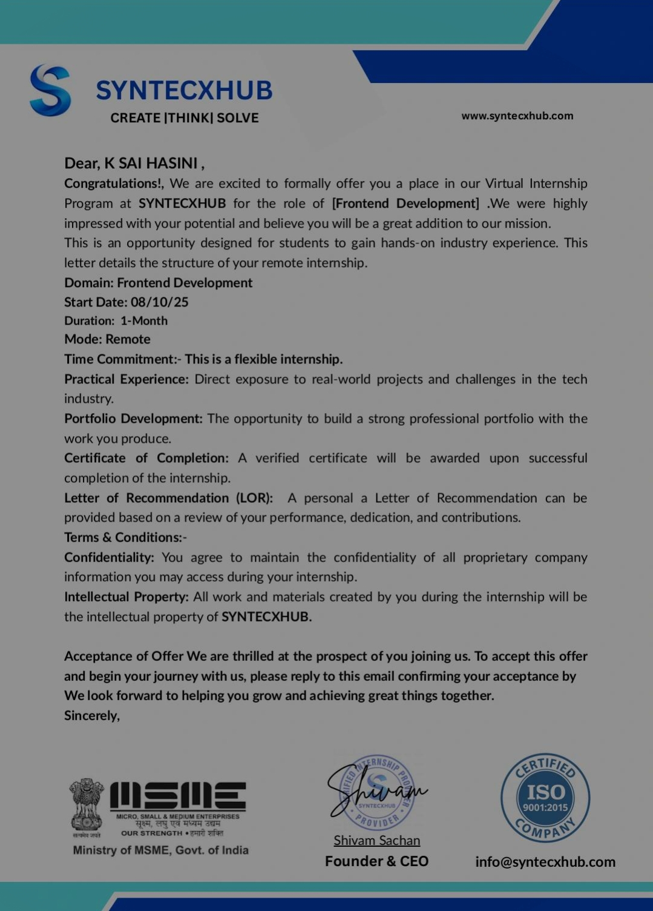
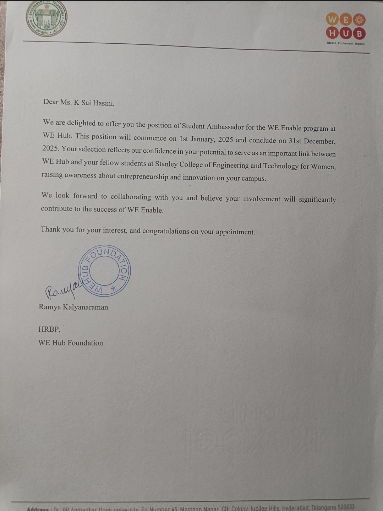
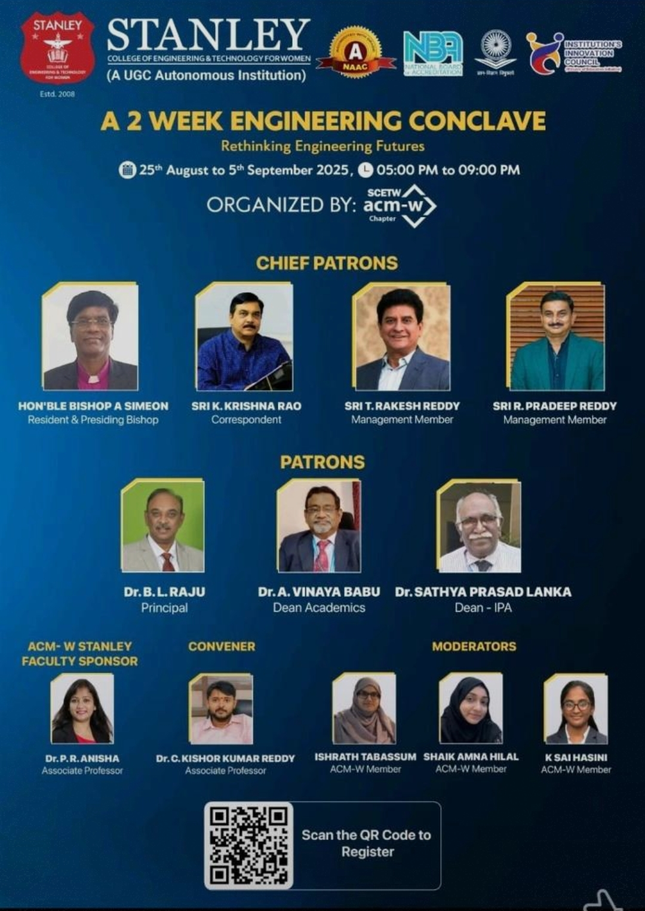
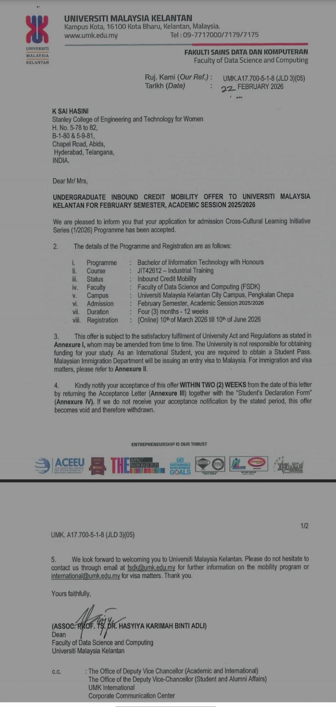
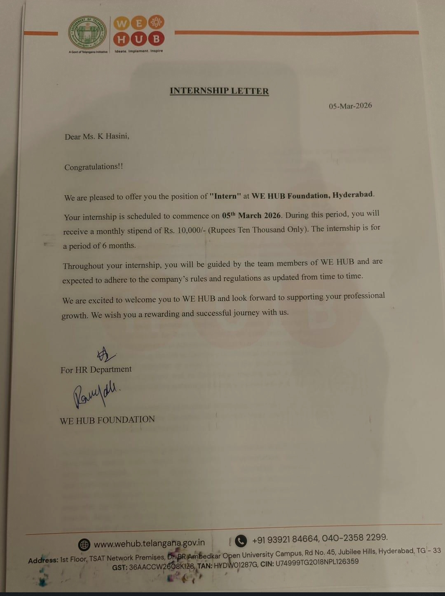

K. SAI HASINI
Aspiring Full Stack developer
Hello, I’m Sai Hasini, a second-year undergraduate student at Stanley College of Engineering and Technology for Women. I am passionate about front-end development and enjoy designing intuitive, user-friendly interfaces.I have a strong interest in podcasting, hosting, and communication, and completed a three-month internship at TAL Radio where I worked on content creation and interviews. I am also involved in research work and enjoy writing blogs and interview-based articles on LinkedIn.I love connecting with people through meaningful conversations feel free to explore my LinkedIn to know more about my journey.

Worked as a Radio and Podcast Intern at TAL RADIO where I actively engaged in content creation and communication. Hosted podcast sessions, conducted interviews with youth leaders, and contributed voice recordings for various programs. Gained hands-on experience in public speaking, interviewing, and content delivery while collaborating with a creative team.
Completed a one-month internship in C Programmingwhere I built a strong foundation in core programming concepts. Worked on assigned tasks and problem-solving exercises that enhanced my understanding of logic building and coding structure. Successfully completed the internship and received certification for the same.
Worked as a Front-End Developer Intern, focusing on building responsive and user-friendly web interfaces. Gained practical experience in HTML and CSS while working on structured tasks and mini-projects. Developed an understanding of UI/UX principles and improved design consistency in web pages.
Served as a Student Ambassador at WeHub, acting as a bridge between WeHub and the college community. Promoted initiatives, guided students, and actively participated in events and engagement activities. Developed leadership, communication, and coordination skills while representing the organization at the campus level.
Currently serving as the Secretary of ACM-W Stanley Chapter. Organized and hosted multiple technical and non-technical events, enhancing student participation and engagement. Represented the chapter at ACM Summits, including participation in events held in Indore. Handled coordination, communication, and initiative planning to support student development.
Working as a Research Intern at Universiti Malaysia Kelantan contributing to academic and analytical work. Involved in studying relevant topics, collecting data, and assisting in research-based tasks. Gaining exposure to structured research methodologies and documentation practices.
Currently working as a Technical Intern at WeHub, focusing on managing and maintaining the LMS platform for students. Responsible for handling UI/UX aspects and ensuring a smooth user experience across the platform. Actively involved in improving interface design and supporting technical operations.


Close
Close
Close
Close
Close
Close
ClosePlease mail to Email : shasini154@gmail.com
Social
I am always open to learning and collaborating!
Connect with me on,